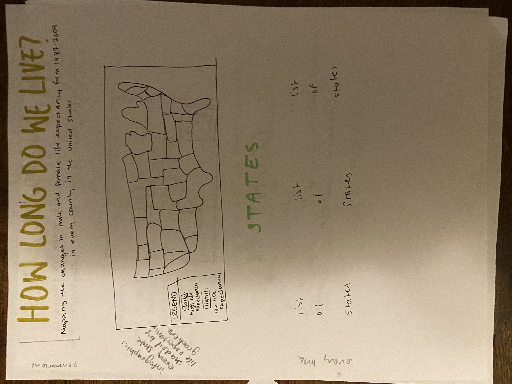
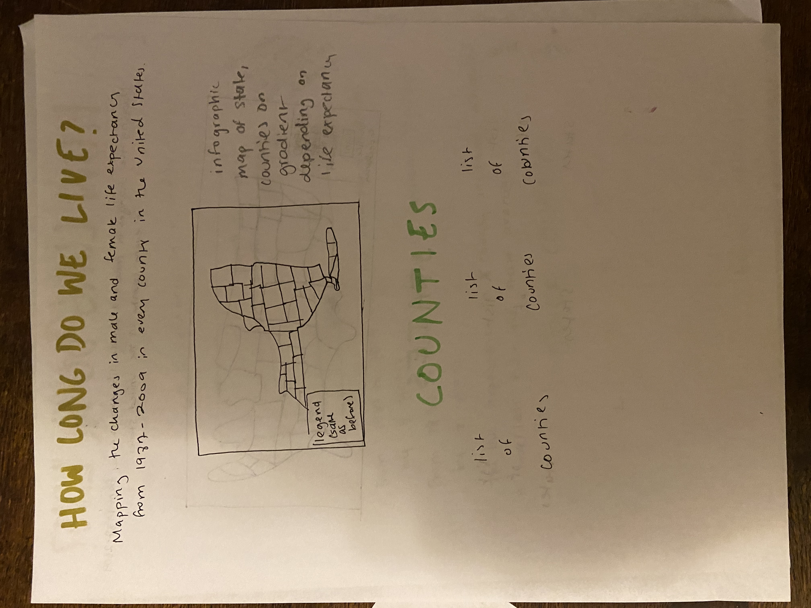
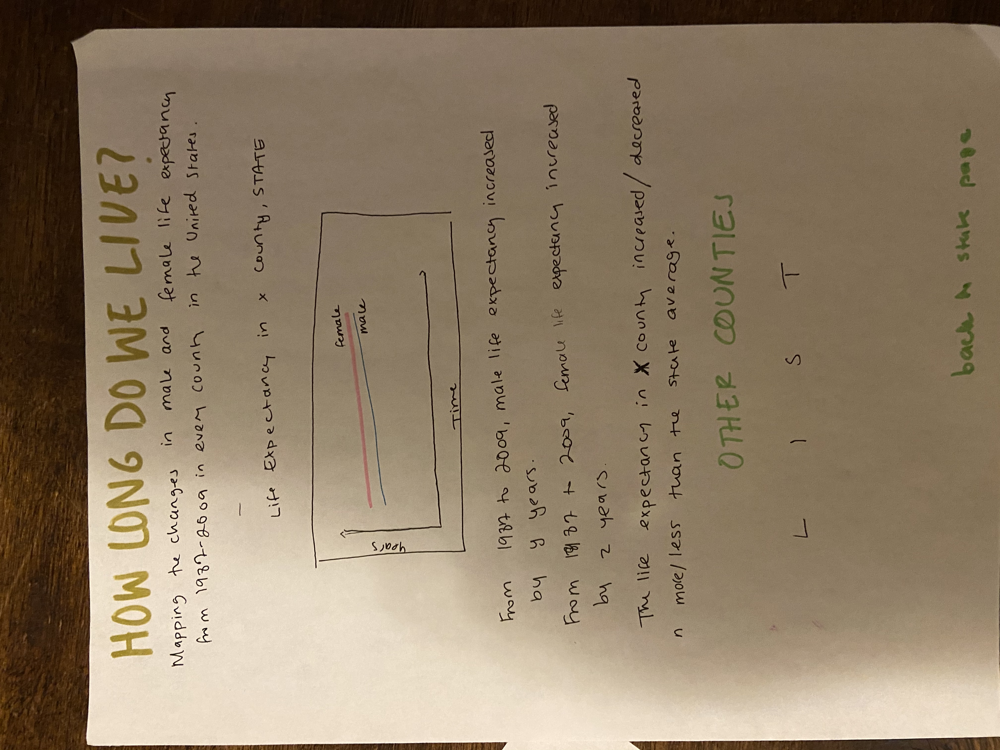
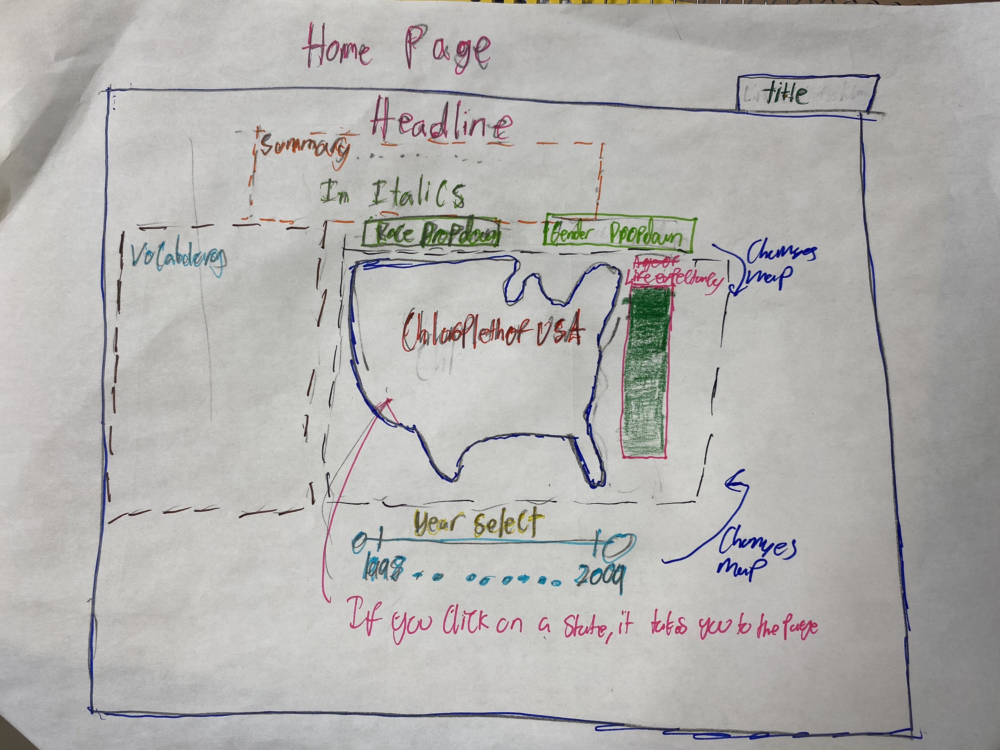
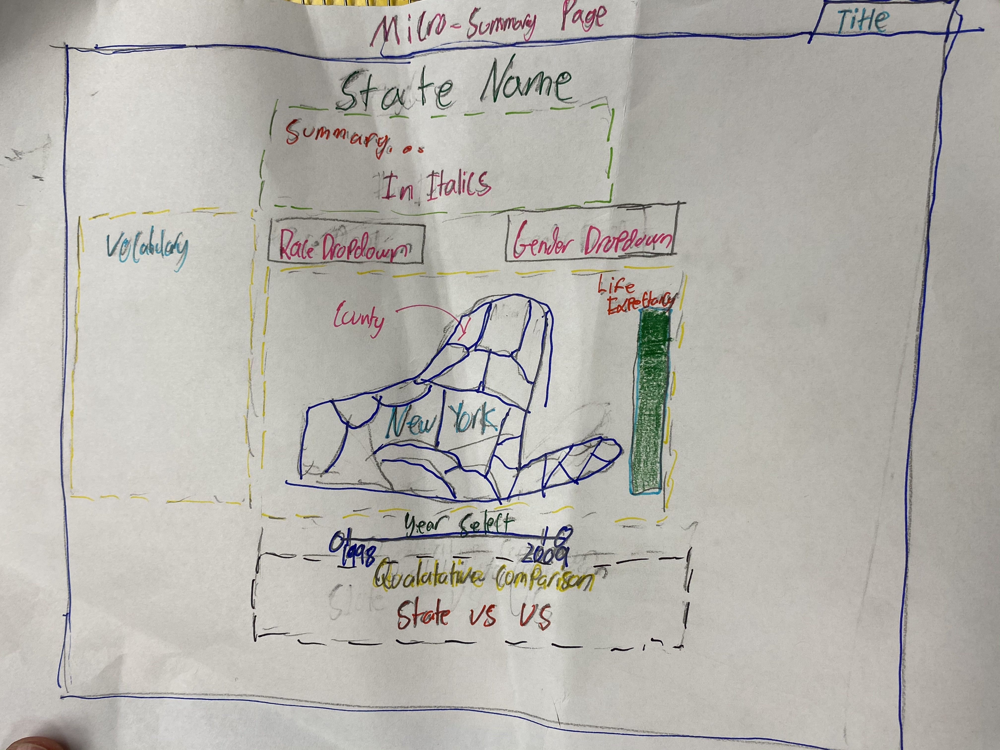

Vocabulary
Initial Prototypes
- Life expectancy: how long a person is expected to live, in years
Cassie's Prototypes
  Understandability
- The map is easy to understand as a legend is availaible to show how color displays life expectancy. Also, having a list of states and counties on both the country and state page makes it easy for the user to find what they want. However, being taken to three different pages in order to select the data may be a little confusing. Also, the maps do not display values over the years.
Achievability
- This design is very achievable, only using a couple of different elements that we have not learned. We can use d3 to create chloropleth maps using the data to create an interactive map. Other than that, only html elements are necessary to create this website.
Structure
- The three page structure makes it so that each of the pages is less crowded. As a result, it is easier for the reader to analyze each of the elements that we are trying to highlight. However, it also makes it easy to get lost in the multiple pages. Scrolling through multiple pages in order to get data may be annoying for users.
Simplicity
- Cassie's website design is somewhat simple to design. With each page being relatively simple to understand, the user does not need to do much work in interpreting the data. However, having three pages for this process does make it both trickier to code and a little harder for the user.
Aadam's Prototypes
 Understandability
- Aadam's prototype is mostly easy to understand. All the buttons are clearly laid out, and it's apparent to the user that they can select different options to generate different maps. However, the color coding is a little disorienting. Though I think everything should be color coded, making the colors more muted would make the interface more accessible.
Achievability
- All of Aadam's suggested prototype is achievable in Plotly through choropleth maps, which can be used to generate gradients based on the numbers provided. The only potential problem may be finding svg files for every state, but I’m sure that with a little digging we should be able to do so.
Structure
- Aadam does a good job of separating unrelated information and grouping together related information. By having the map be the center of the webpage, and having other information on 3/4 sides of the map, he makes sure that everything is linked together in an obvious way. For example, though vocabulary isn't directly related to the summary, they both relate to the map, so they make structural sense.
Simplicity
- I think that Aadam's prototype could be a little simpler. Currently, the three factors influencing the map -- race, gender, and year -- are all spread out on the main page, giving the user an overload of information. By making two out of three of those factors, race and gender, accessible via a dropdown menu instead of as buttons, we could make the interface look cleaner.
Pipeline

Final Design
- For our final prototype, we decided to go with Aadam’s two page approach instead of Cassie’s three page approach for the sake of simplicity. In this way, instead of having to go through a state’s page to locate a specific county, the user could simply press on a county from the United States map. However, for the county (micro) page, we used Cassie’s method of showing life expectancies over time in a series of graphs. In Cassie’s original prototype, she didn’t take race into account, but Aadam’s emphasis on both gender and race led the final prototype to have a micropage with four separate graphs, one for white females, one for white males, one for Black females, and one for Black men. In this way, the final prototype was a combination of both of our prototypes.